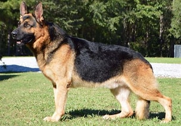

The German Shepherd[a] is a German breed of working dog of medium to large size. The breed was developed by Max von Stephanitz using various traditional German herding dogs from 1899.
It was originally bred as a herding dog, for herding sheep. It has since been used in many other types of work, including disability assistance, search-and-rescue, police work, and warfare. It is commonly kept as a companion dog, and according to the Fédération Cynologique Internationale had the second-highest number of annual registrations in 2013.[
The dachshund (UK: /ˈdækshʊnd, -ənd, -hʊnt/ DAKS-huund, -ənd, -huunt or US: /ˈdɑːkshʊnt, -hʊnd, -ənt/ DAHKS-huunt, -huund, -ənt;[1][2][3][4] German: "badger dog"), also known as the wiener dog, badger dog, doxie, and sausage dog, is a short-legged, long-bodied, hound-type dog breed. The dog may be smooth-haired, wire-haired, or long-haired. Coloration varies. The dachshund was bred to scent, chase, and flush out badgers and other burrow-dwelling animals. The miniature dachshund was bred to hunt small animals such as rabbits.[5] According to the American Kennel Club, the dachshund was ranked 9th in popularity among dog breeds in the United States in 2022.[6]